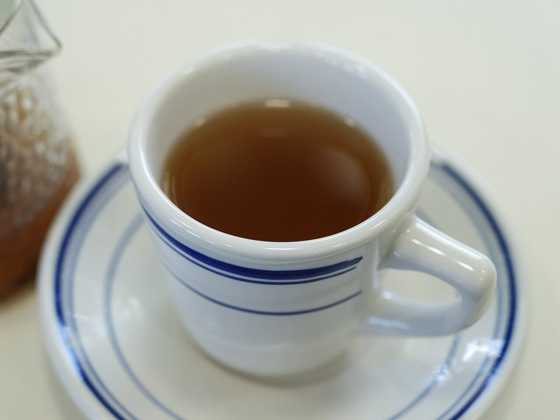
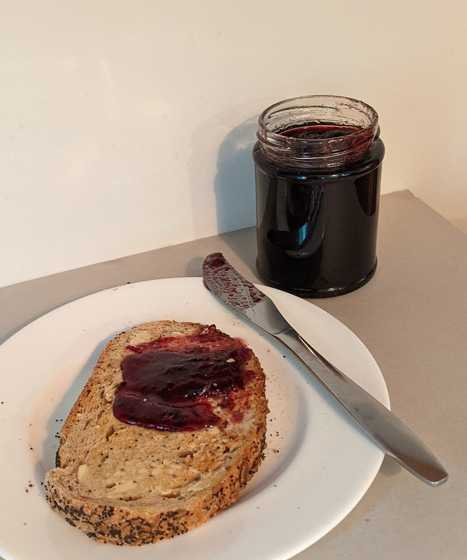
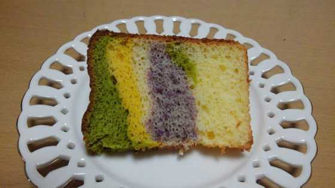
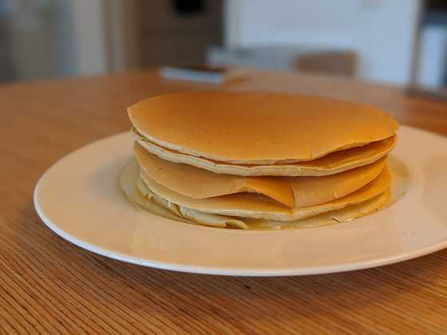

宮崎県小林市本町 / ランチとカフェ
歩いてきた一日の途中に、
丁寧な食事とお菓子を。
親子で営む「tekuteku」は、小林の素材を使って、ごはんとお菓子を一つずつ手づくりするお店です。
お店のこと
丁寧な食事とお菓子を届けたい。
tekutekuは2024年11月、小林市で坂下知佳さん・友紀さん親子が始めたお店です。コンセプトは「丁寧な食事とお菓子を届けたい」。小林産のフルーツ、北海道産の小麦粉、高千穂バターなど、素材にこだわって作られていると紹介されています。
ランチは小鉢にいろいろなおかずを少しずつ盛るスタイル。午後はプリンやタルトなどのお菓子と自家製フルーツシロップのドリンクが楽しめるカフェになります。
情報源: MONE(UMK)の紹介記事/Instagram
店名の意味は確認できていません。このページの見出しなど上記の事実以外は制作側の表現です。


メニュー
お昼のごはんと、午後のお菓子。
写真はフリー素材のイメージで、お店の実際の料理ではありません。営業時間・価格・メニュー詳細は準備中です。
ランチ
週替わりの「本日のお食事」。小鉢に少しずつ盛るおかずが並ぶスタイルと紹介されています。
価格: 準備中
カフェ・お菓子
プリンやパンナコッタ、タルトなどのデザートと、自家製フルーツシロップのドリンク(季節で変わるとのこと)。焼き菓子の販売、テイクアウトもあるそうです。
価格: 準備中







口コミ
こんなお声が届きそうです
イメージ例
小鉢がいくつも並んで、見た目も楽しいランチでした。食べたあとも体が軽い感じがします。
イメージ例
午後のお菓子を目当てに寄りました。甘さがやさしくて、ゆっくりお茶の時間を過ごせました。
イメージ例
親子で切り盛りされていて、あたたかい雰囲気。また散歩がてら立ち寄りたいです。
上記は制作側が作成したイメージ例で、実際のお客様の声ではありません。